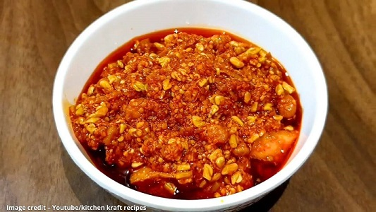

|
|
▢ 100 ગ્રામ ચણા
▢ 100 ગ્રામ મેથીના દાણા
▢ 1 ચમચી હળદર
▢ 1 ચમચી મીઠું
▢250 ગ્રામ અથાણાનો મસાલો
▢ ત્રણસો ગ્રામ સીંગતેલ
|
|
ચણાને મેથીનું અલગ-અલગ પાણીથી ધોઈ ૫ કલાક પલાળી રાખો. ખાટું અથાણું બનાવ્યું હતું તે પાણીમાં ચણાને મેથીને પલાળો. પછી તેમાંથી પાણી કાઢી કોટન કપડામાં કોરા કરી લેવા. કેરીને છોલી છીણી લો.
સ્ટેપ2:
હવે મોટા વાસણમાં કેરીનું છીન,ચણા અને મેથીના દાણા, હળદર,મીઠું નાખી અંદર અથાણાનો મસાલો ઉમેરી મિક્સ કરો. હવે તેને બે કલાક ઢાંકીને રાખો.
સ્ટેપ3:
તેલ ગરમ કરો. અંદરથી વરાળ નીકળી તેટલું ગરમ કરવું.ઠંડું પડે પછી કાચની બરણીમાં તૈયાર કરેલ અથાણું નાખો. પછી તેના ઉપર તેલ ઉમેરી હલાવી દો.
સ્ટેપ4:
રેડી છે ચણા મેથી અને કાચી કેરીનું અથાણું. તેને સર્વિંગ બાઉલમાં લઈ સર્વ કરો.